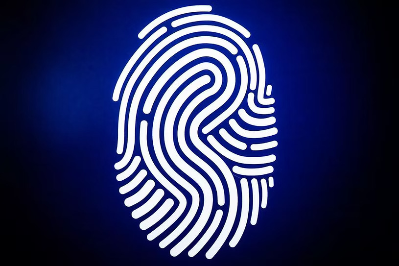

Your fingerprint is a unique story. Let's scan its patterns to reveal your core archetype and your historical counterpart.
No personal data is stored by this app.
Your analysis will be compared against historical figures. Please choose a category.
To calibrate the analyser, please place your finger on the scanner below.
Your legacy print reveals the archetype of...